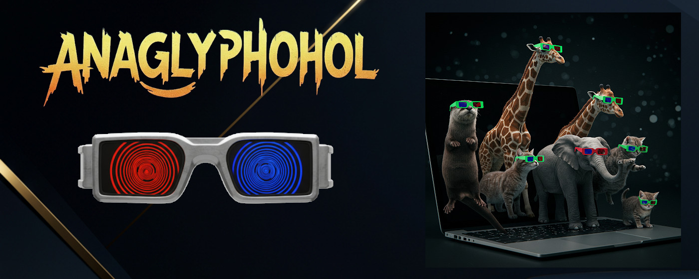
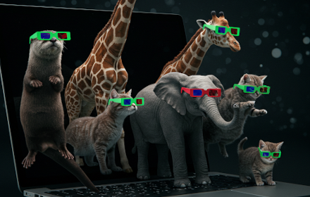
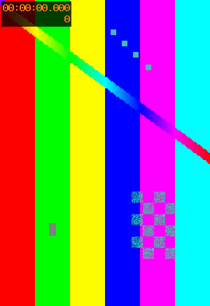

Anaglyphohol test page
Served by _tools/serve-testpage.ps1 (http://localhost:8765/). Probed by _tools/probe-*.js through cdp.cs.

same-origin JPEG, scaled

same-origin PNG, natural size

odd size 301x437 (row padding path)
under the 100 px minimum: must stay untracked
same-origin H.264 640x360, muted loop